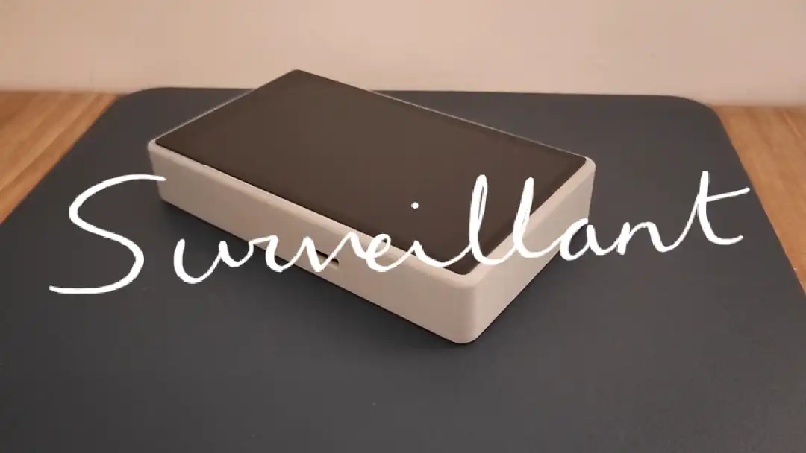
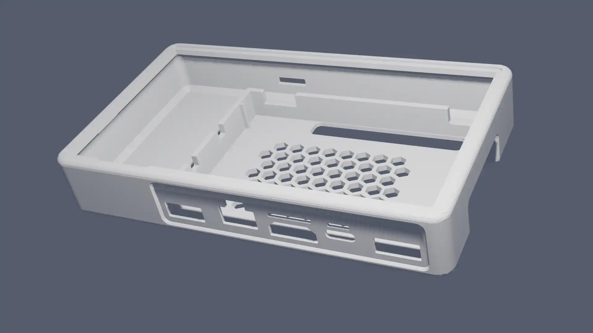
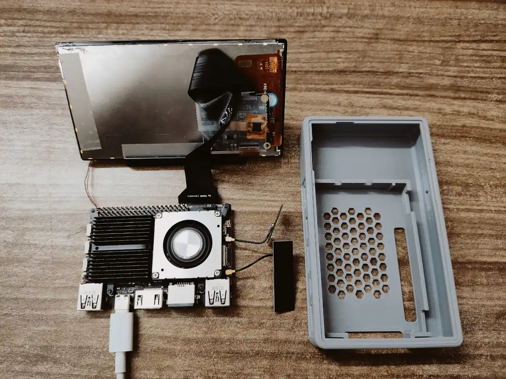
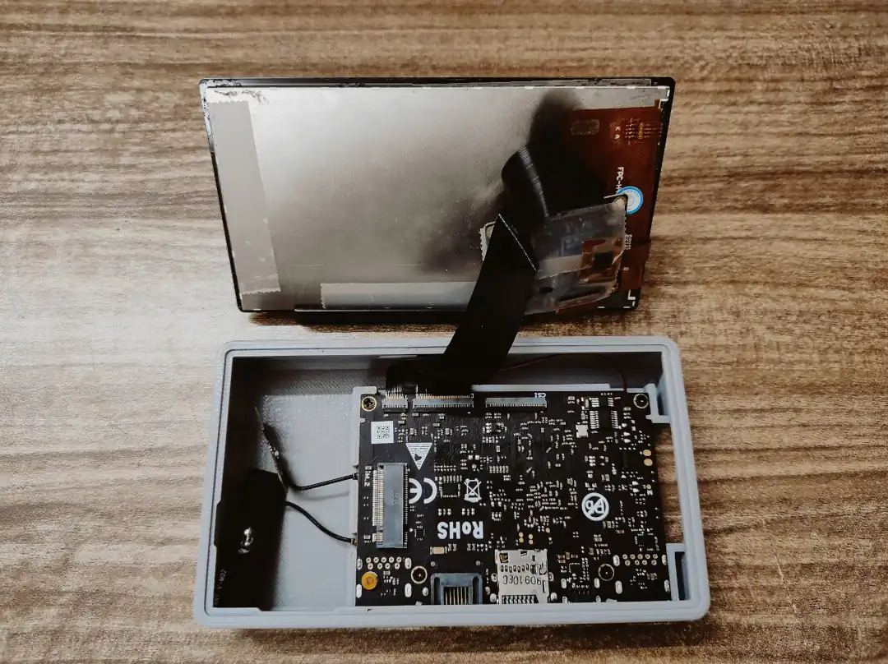
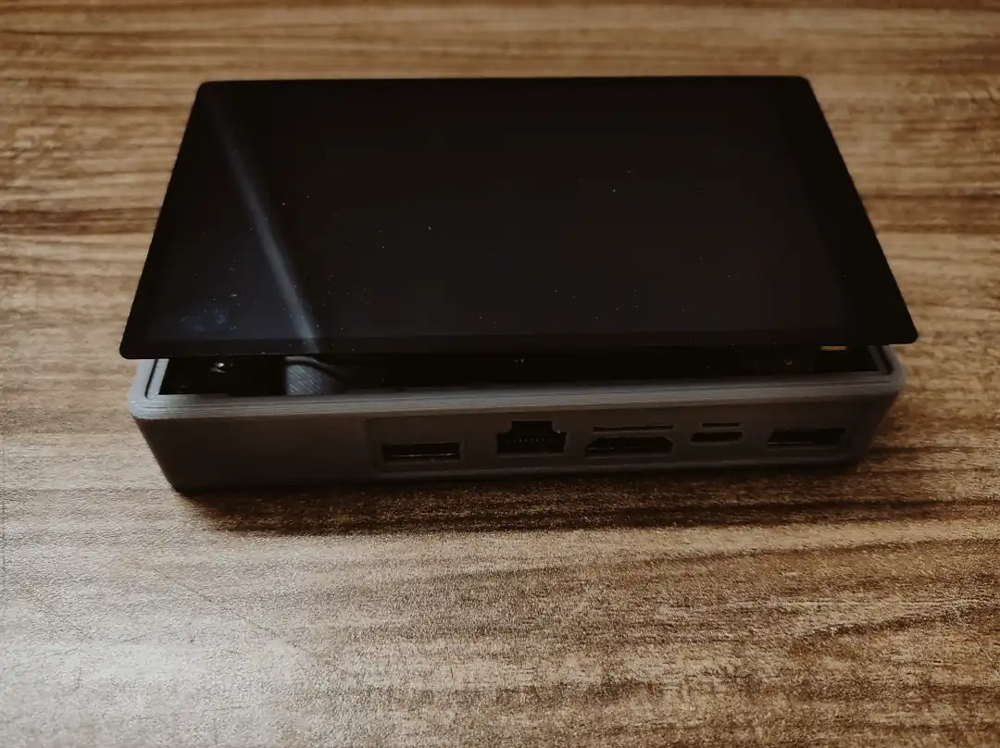
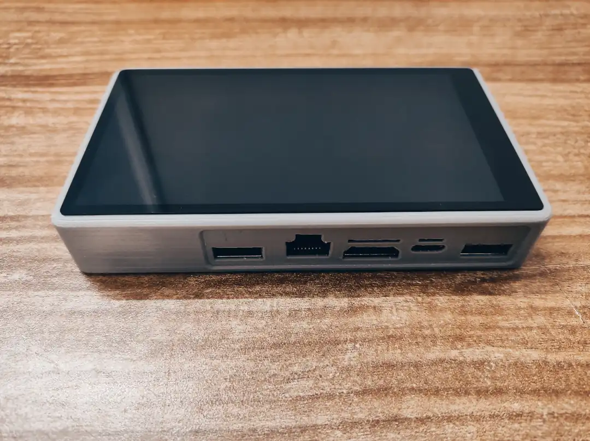
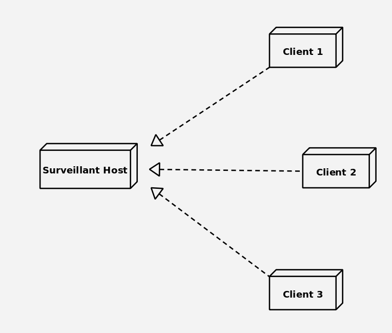
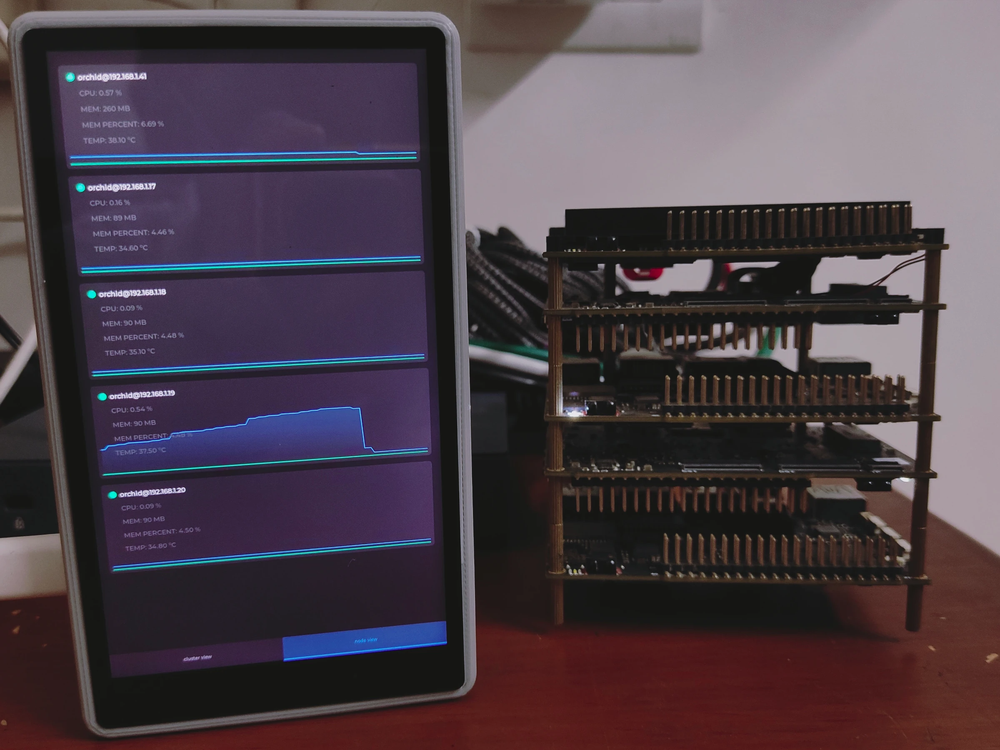

Surveillant
A highly customizeable dashboard on your desktop

The surveillant project is an ambitious idea to make an all in one system mangement utility, that is compact enough to fit on your desktop.
the principle of the project to have a dedicated monitoring that can operate independant of your actual system, as well as act like a middleman when you need to interact with it as well
the project has 2 parts to it, mainly the physical dashboard as seen above, as well as the software which can be customized to run on other modified platforms
for my usage I built it with a khadas's VIM3 and their TS050 touchscreen and the enclosure which is a customized version of a handheld case which is 3D printed

Rendered version of the 3D printed case

Disassembled construction



completely assembled construction
now the software framework for this project is based on the principle of sending the data collected over the local network for displaying on the dashboard

multi client and host system
the system of having a dedicated server and client is more efficient that previous methods of data collection, which involved more heavy services like mpich to collect and send the data which was quite bulky
this newer system has minimal system load and can be considered to have negligible resource usage during run time.

0% cpu usage during idle and still fetching data, efficent!
This client can be ported to other platforms with ease, I've documented the requirements for building a custom client in the github documentation so if you require a modified version of the client server, its possible to create one from scratch!
the project is completely open source and available on github to download and try out!
check it out at zephyrlabs/surveillant

obtain a copy of the SysML here: System Model of Surveillant